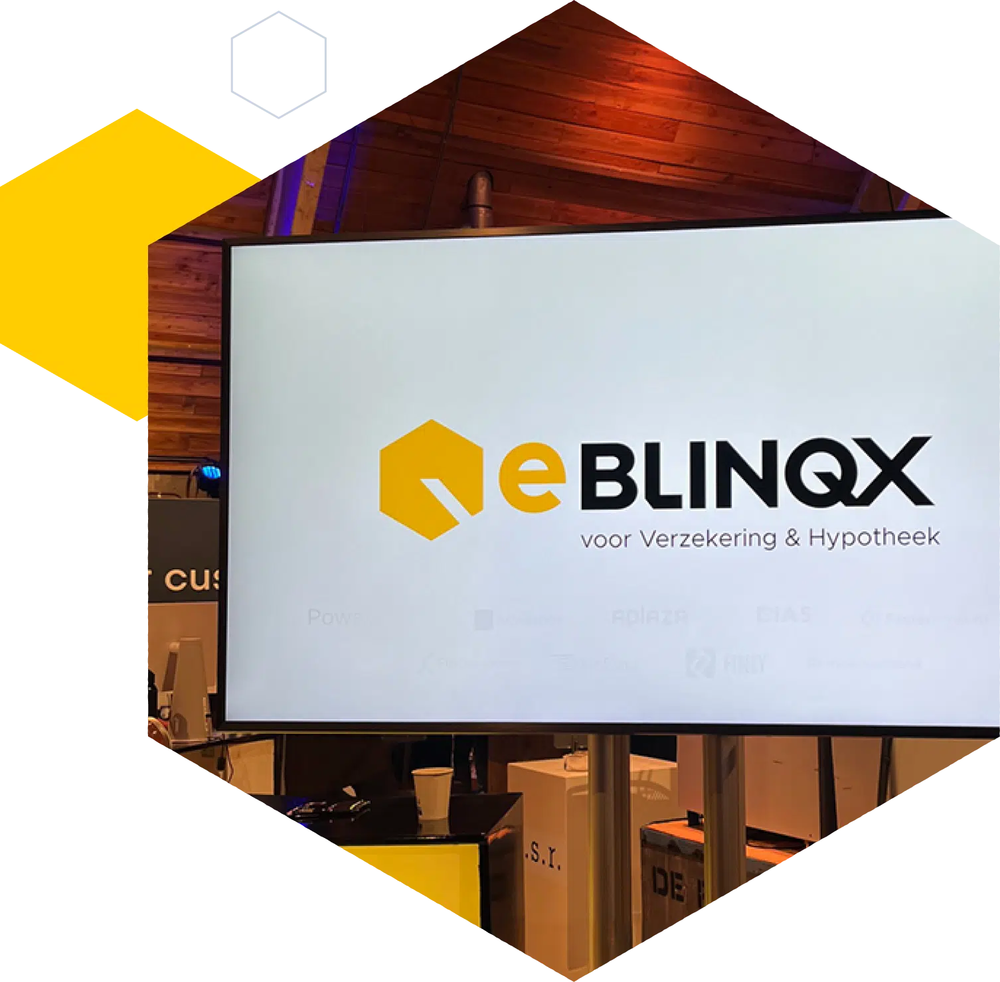
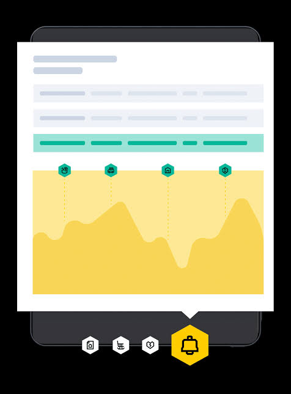
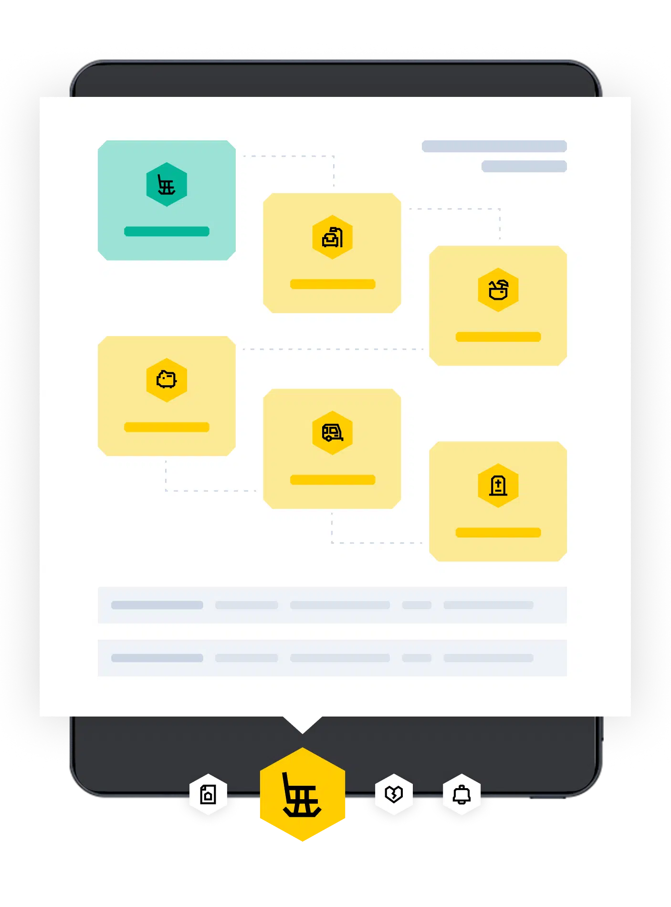
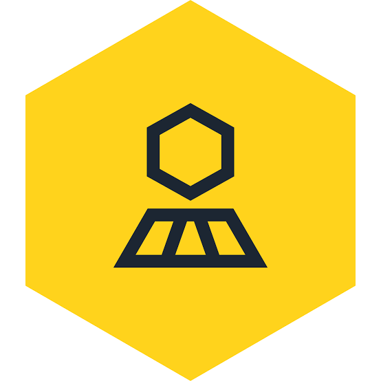
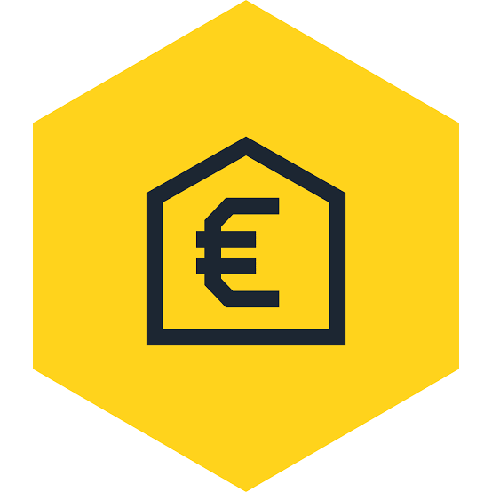
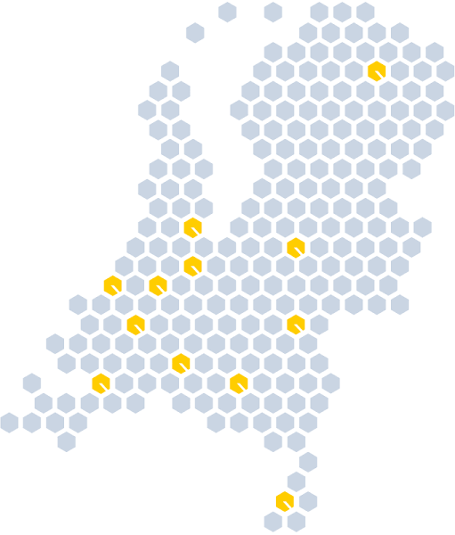

Editie 2026
Alles voor jouw adviespraktijk. Onder één dak.
Van oriëntatie tot actief beheer: platform, adviessoftware, signalen, klantportaal en rekentools die naadloos samenwerken. Meer omzet uit je eigen portefeuille, minder gedoe.
Slimme software om ook morgen succesvol te zijn.
Als financieel dienstverlener heb je oplossingen nodig die je werk makkelijker maken, met de klant centraal en digitalisering als krachtig middel. Blinqx Verzekering & Hypotheek biedt innovatieve cloudoplossingen die naadloos samenwerken — voor adviseurs en dienstverleners in de verzekerings- en hypothekenbranche.

Geen geforceerde keuze meer tussen best-of-breed of best-of-suite.
Adviseer in elke fase met datagedreven inzicht, op één plek.
Breng je verdienmodel en bedieningsconcept naar het volgende niveau.
Eén klantdossier, zes momenten van contact.
Onze oplossingen sluiten op elkaar aan. Data stroomt door de hele keten — van de eerste rekensom op je website tot het signaal dat je klant tien jaar later kan besparen. Alles komt samen in één dossier, en dat dossier is bij elke stap actueel.
Rekentools en leads
Brondata en klantprofiel
Toetsen en adviesrapport
Vergelijken en HDN
Schade en afhandeling
Signalen en campagnes

Het alles-in-één platform voor optimale klantbinding.
Faciliteer al je kernprocessen vanuit één centrale omgeving. Klantgegevens en dossiers zijn altijd centraal en up-to-date beschikbaar — ook voor zelf-incasserende kantoren. Kies de variant die bij je kantoor past en breid uit wanneer je wilt.

Hypotheek, verzekering, volmacht en CRM in één systeem. De volledige adviespraktijk op één fundament.
Van inventarisatie tot aanvraag en beheer van hypotheekdossiers, met alle rekenkracht van Blinqx.
Particulier en zakelijk schadebeheer: polissen, mutaties, prolongatie en incasso in één stroom.
Neem je klant de backoffice uit handen. Volmachtprocessen volledig gefaciliteerd vanuit één omgeving.
Eén klantbeeld voor het hele kantoor — contactmomenten, dossiers, taken en documenten bij elkaar.
Bijzondere en complexe risico's eenvoudig en efficiënt aangaan vanuit één centrale omgeving.
Aankoop- en verkoopbegeleiding, woningwaarde en het complete woningaanbod — de makelaardij naast je financieel advies.
AI die meewerkt in je dagelijkse stroom — ingebouwd in het platform, geen losse tool.
Slimme automatisering en verbindingen.
Alle informatie in één centrale omgeving.
Realtime inzicht op elk niveau.
AI als collega. En modules die meegroeien.
AI die meewerkt in je dagelijkse stroom: inkomende mail wordt gelezen, samengevat en gekoppeld aan het juiste dossier, concepten worden voorgesteld en terugkerend administratief werk verdwijnt naar de achtergrond. Geen losse feature, maar onderdeel van het platform waar je toch al werkt.
Volwaardige financiële planning naast het hypotheek- en verzekeringsadvies.
Breng zakelijke en particuliere risico's gestructureerd in kaart en onderbouw je advies.
Websites, websitetools, nieuws en nieuwsbrieven — je digitale groei op één plek.
Vergelijk premies en voorwaarden van verzekeraars binnen hetzelfde dossier.
Ken-uw-klant en Wwft-verplichtingen ingebed in het adviesproces.
Combineer het platform met externe oplossingen naar keuze — connectief werken.
Digitale formulieren die data direct in het juiste dossier laten landen.
Naverrekening van zakelijke polissen, geautomatiseerd en controleerbaar.
Dagelijks de kansen in je eigen portefeuille in beeld — zie pagina 08.
Fiscale dienstverlening naast het financieel advies, binnen hetzelfde klantdossier.
Het CRM waarin je moeiteloos samenwerkt.
eBlinqx Connect CRM is het alles-in-één CRM voor kantoren die hun hele klantrelatie in één systeem willen voeren: één klantbeeld met dossiers, communicatie, taken en documenten, en de klant en ketenpartners eraan verbonden. Voorheen bekend als Faster Forward.
Alle contactmomenten, polissen, dossiers en documenten van een relatie op één scherm — voor iedereen op kantoor hetzelfde beeld.
Deel stukken, vraag gegevens op en laat digitaal ondertekenen, rechtstreeks vanuit het dossier.
Leg je kantoorproces vast in stappen, met signalering wanneer iets blijft liggen.
Automatische archivering en herkenning van inkomende post, gekoppeld aan het juiste dossier.
HDN, brondata en geldverstrekkers zijn ingebouwd — geen los koppelvlak per partij.
Realtime inzicht in productie, conversie en werkvoorraad, per adviseur en per vestiging.
Eén CRM onder je hele praktijk: hypotheek, verzekering en volmacht kijken naar hetzelfde klantbeeld.
Fast van oriëntatie naar advies en aanvraag.
Realtime toetsing tijdens de inventarisatie, de ideale hypotheekconstructie samenstellen en direct aanvragen via HDN. Het enige adviespakket in Nederland met een geïntegreerd CRM, klantportaal én Blinqx PortefeuilleSignalen.
Experimenteer vrij met inkomen en verplichtingen. Wat je invoert blijft binnen de berekening en raakt het CRM niet — ideaal voor het eerste gesprek met een prospect.
Rekent op de gegevens die al in het CRM staan: leeftijd, inkomen, verplichtingen. Eén bron van waarheid, en een volautomatisch adviesrapport aan het eind.
Vergelijk geldverstrekkers en verzekeraars en vraag een renteaanbod aan via HDN — bij een geldverstrekker, serviceprovider of door naar een CRM-pakket.
Klanten krijgen op het juiste moment relevante besparings- en nazorgtriggers, dankzij de integratie met het klantportaal en Blinqx PortefeuilleSignalen.
"Ik kan snel en professioneel antwoord geven op de vraag of ze de woning kunnen kopen — en de hypotheek direct aanvragen via HDN."
"Doet direct veel meer dan ik van hypotheekadviessoftware gewend ben. Snel en doeltreffend, inclusief een mooi adviesrapport."
Wat er precies in zit.
Betaal je nog voor je huidige hypotheekadviessoftware? Dan mag je Blinqx Hypotheekadvies kosteloos gebruiken tot het einde van dat contract. Zo stap je over zonder dubbel te betalen.
Nieuwe kantoren starten met een training, een ingerichte omgeving en een vaste contactpersoon. Je bent binnen een dag productief — inlezen van de bestaande portefeuille regelen wij.
Aandacht op het juiste moment.
Je hebt geen tijd om je complete portefeuille dagelijks door te rekenen — daardoor mis je omzet en tevreden klanten. Blinqx PortefeuilleSignalen doet het werk: dagelijks geactualiseerde tarieven, premies, normen en voorwaarden, en elke ochtend een overzicht met kansen.

Ruim op tijd een volledig uitgewerkte vergelijking tussen het verwachte verlengingsvoorstel en de rest van de markt.
Vergelijk nagenoeg alle verstrekkers inclusief oversluitkosten, voorwaarden en terugverdientijd.
Weet het als de woning van je relatie te koop staat — en wees eerder aan tafel dan de concurrent.
Gestegen woningwaarde? Dan zit je klant misschien onnodig in een te hoog verstrekkingstarief.
Verpande én losse ORV's worden vergeleken, zodat jij eerder dan je klant weet dat het goedkoper kan.
Inzicht in klanten die kunnen verduurzamen, met de financieringsmogelijkheden erbij.
Attendeer klanten op de mogelijkheden vóór ze 57 worden, wanneer er nog echt iets te kiezen valt.
Maak eigen selecties op elk kenmerk in je portefeuille en zet er een campagne op.
Voordeur open, achterdeur dicht: je klanten betalen nooit te veel, en je wordt nooit meer verrast door een verloren relatie.
Wij automatiseren, jij adviseert.
Met campagnes vul je je agenda moeiteloos met afspraken. De software benadert automatisch de juiste relaties op de meest efficiënte manier. Zo benut je alle kansen, voldoe je aan de zorgplicht en actualiseer je en passant je dossiers.

Eén druk op de knop en er gaat een volledig persoonlijke brief of e-mail uit. Persoonlijke service op maat, zonder handwerk.
Bereken vooraf hoeveel kansen er verborgen zitten in jouw portefeuille — en wat dat aan omzet kan betekenen.
Leg vast dat je hebt gekeken en waarom je hebt geadviseerd. De onderbouwing van je zorgplicht, automatisch.
Automatische dataverwerking vanuit geldverstrekkers en koppelingen met mijn-omgevingen en apps houden dossiers up-to-date.
Wat is mijn woning waard? Kan ik deze woning kopen? Wat gaat mij dat kosten? In een paar klikken berekend.
Campagnes benaderen relaties automatisch, zodat je adviesgesprekken vanzelf binnenkomen.
"Direct na het geautomatiseerd inlezen van mijn portefeuille rolden de eerste leads er al volledig doorgerekend uit."
"We hebben nooit geweten dat er zoveel verborgen kansen liggen binnen onze huidige klantenkring."
Meer tevreden klanten, minder gedoe.
De online mijn-omgeving waarin je soepel samenwerkt met je klant. Adviesrapporten, offertes, leningdelen, polisbladen, serviceabonnementen en gespreksverslagen — alle relevante informatie veilig op één plek. In de browser en als app voor iOS en Android.
Klanten zien de status van hun aanvraag, delen brondata en ondertekenen documenten digitaal.
Herkenbare omgeving in je eigen huisstijl, met de contactgegevens van adviseur en kantoor.
Naadloze verbindingen met CRM en adviessoftware wisselen gegevens razendsnel uit.
Bericht bij aflopende hypotheken, goedkopere verzekeringen en belangrijke life-events.

"We werken efficiënt en krijgen documenten digitaal ondertekend retour."
"Documenten uitwisselen is altijd veilig. Klanten hoeven niets meer te mailen."
Voorkom dat bestaande klanten weglopen.
Omzet halen bij bestaande klanten is veel goedkoper dan nieuwe klanten werven. Met twintig slimme nazorgscans geef je invulling aan beheer, nazorg én je zorgplicht — geautomatiseerd verstuurd, met reminders en respons-beheer inbegrepen.

van de klanten switcht naar een ander bedrijf omdat ze ontevreden zijn — en niets van je horen.
kans dat een bestaande tevreden klant opnieuw bij je koopt.
zoveel tijd en geld kost het vinden van een nieuwe klant als het behouden van een huidige.
Kant-en-klare scans voor beheer en actief klantbeheer. Je kunt direct beginnen.
Aantoonbaar contact op vaste momenten, vastgelegd in het dossier.
Geautomatiseerd versturen, reminders en het beheer van alle reacties: geregeld.
Een complete supportomgeving, plus trainingen en workshops. En je kunt gewoon bellen.
Beheer dat zichzelf op de agenda zet.
Het onderhoudscontract is in eBlinqx een echt product in het klantdossier. Daarmee leg je niet alleen het abonnement en het tarief vast, maar ook elk contactmoment — en het systeem bewaakt zelf wanneer de volgende beurt is.
Leg het onderhoudscontract vast als product in het klantdossier, met contractdelen, looptijd en tarief — ook handig als je geen abonnement verkoopt maar wél contactmomenten wilt vastleggen.
Prolongeer, incasseer en indexeer diensten en contracten periodiek. Zelf incasserend of via de verzekeraar — beide worden ondersteund.
Een workflow die belpogingen registreert, na drie keer automatisch een concept-e-mail klaarzet en het gespreksverslag in het dossier vastlegt.
Acties uit het gesprek gaan als taak naar de backoffice, en het volgende contactmoment start de cyclus automatisch opnieuw.
Contract en contractdelen vastleggen in het dossier.
Datum bepalen; er ontstaat een taak voor de behandelaar.
Belpogingen en verslag vastgelegd, acties naar de binnendienst.
Volgend contactmoment ingepland — de cyclus start vanzelf.
Een klant werven is één. Hem behouden en de waarde vergroten is twee — maak daarom zichtbaar wat je in het beheer voor hem doet.
Financieel inzicht in één gesprek.
Breng snel en effectief de financiële situatie van particulieren en ondernemers in kaart en bepaal het doelkapitaal. Visueel, begrijpelijk en direct in een rapport — zodat je klant ziet waar het over gaat en jij binnen drie of vier uur een dossier rond hebt in plaats van tien.

Adviseer snel en effectief over (vroeg)pensioen en over het risico op overlijden en arbeidsongeschiktheid — voor particulieren, ondernemers en werknemers.
Periodiek klantcontact en leadgeneratie uit je eigen klantendatabase. Wij doen het werk, jij houdt tijd over — plug & play ingericht op jouw werkwijze.
Zie ruim op tijd welke klanten een expirerend kapitaal hebben en wat de keuzes zijn.
Reken door wat vroegpensioen betekent en maak het scenario visueel bespreekbaar.
Advies én onderhoud op de dekking: klopt die nog bij de situatie van vandaag?
Breng het AO-risico in beeld en geef invulling aan actief klantbeheer op de AOV.
Box 1 en box 3 in samenhang, met het doelkapitaal als heldere uitkomst.
Aflossen, rentewijzigingen en onderhoud meegenomen in het totale financiële plaatje.
Automatisch een visueel rapport dat je klant echt begrijpt.
Passend advies binnen het budget van je klant, altijd onderbouwd.
Trainingen, toolkits en webinars om je dienstverlening te verbreden.
"Ik ben nu gemiddeld drie of vier uur bezig met een dossier, in plaats van tien uur."
Tweeëntwintig rekentools. Bekend van Radar en Kassa.
Consumenten rekenen bij ons hun verbeter- en besparingsmogelijkheden uit. Diezelfde tools zet je in op je eigen site, in je eigen huisstijl — en de bezoeker die er uitkomt, komt bij jou aan tafel.

Consumenten zoeken op postcode een adviseur in de buurt en zien jouw kantoor met profiel en contactgegevens. Aanmelden kan direct — je vult je vermelding zelf aan en houdt hem actueel.
De consumentensite van de Nationale Hypotheekbond trekt maandelijks bezoekers die aan het rekenen zijn. Wie er uitkomt, wordt naar een aangesloten kantoor geleid.
Rentetarieven, premies, normen en voorwaarden worden dagelijks geactualiseerd. Elke berekening is gebaseerd op de markt van vandaag.
Van websitebezoeker naar afspraak.
Complete, eenvoudige interfaces met duidelijk taalgebruik en een professionele lay-out — aan te passen aan je eigen huisstijl. Dé manier om websitebezoekers om te zetten in kantoorbezoekers.
"Hoeveel kan ik lenen?" is de meestgestelde vraag van iedere particulier. In een paar stappen staat het antwoord op je eigen website — en de bezoeker weet meteen of die droomwoning binnen handbereik is.
Betaal ik niet te veel? Was dat verlengingsvoorstel wel gunstig? Je bezoeker heeft binnen twee minuten inzicht in mogelijke besparingen en maakt daarna direct een afspraak bij jou op kantoor.
Verzamel gegevens van bestaande én nieuwe relaties. Bestaande klanten krijgen geautomatiseerd een persoonlijke inlogcode, prospects maken een profiel aan. Alles landt direct in je account.
Een dagelijks bijgewerkt hypotheekrenteoverzicht op je eigen site. Goed voor je vindbaarheid, en een reden voor bezoekers om terug te komen.
Een complete website in jouw huisstijl, gebouwd op de tools en content die je toch al gebruikt. Snel live, makkelijk te onderhouden.
Actuele content en persoonlijke nieuwsbrieven, automatisch klaargezet. Blijf zichtbaar bij je relaties zonder er tijd in te steken.
Kleuren, logo en typografie van jouw kantoor.
Eenvoudig te embedden in elke bestaande website.
Elke berekening komt binnen als opvolgbare lead.
"Binnen drie weken na onze aanmelding kregen wij al onze eerste doorverwijzing, met een besparing van bijna € 80,- per maand."
De woning en de hypotheek. Eindelijk op één fundament.
Meer dan de helft van de mensen die bij een adviseur binnenlopen, oriënteert zich al op de woningmarkt. En elke makelaar krijgt de financieringsvraag op zijn bureau. Blinqx Makelaarsdiensten sluit die twee werelden aan elkaar — vier oplossingen die samen één klantreis vormen.
Objecten, relaties en dossiers in één systeem, voor een vast en laag maandbedrag. Publiceren naar 20+ kanalen, nieuwbouw- en projectbeheer, digitaal ondertekenen met Wwft- en UBO-checks.
Realtime NVM-woningaanbod, zoekprofielen en e-mailalerts in jouw huisstijl. Inclusief aan- en verkoopdossier, Wwft-check en digitaal ondertekenen — en de klant ziet jouw logo bij elke alert.
Geautomatiseerde woningwaarderapporten met de actuele waarde van een woning. De sterkste gespreksopener die er is — voor verhuizen, oversluiten én verduurzamen.
De rekentools van de Hypotheekbond op de site van de makelaar: maximale hypotheek, maandlasten, kan ik deze woning kopen, en het duurzaamheidsprofiel van de woning.
Makelaar en hypotheekadviseur op hetzelfde fundament: de klant merkt het verschil in snelheid.
In beeld vanaf dag één.
Wie een woning zoekt, kijkt elke dag. Die aandacht wil je niet aan een portal afstaan. Met MijnHuiszaken zoekt je klant in jouw omgeving — en jij weet als eerste wanneer er iets in beweging komt.
Het complete aanbod van NVM-makelaars, afgestemd op het zoekprofiel van je klant. Een geverifieerde zoekopdracht die geen enkele woningzoeker wil missen.
Uitnodigen via een button op je site, een link in een e-mail of gewoon aan tafel. Je logo en contactgegevens staan in de omgeving én in elke alert.
Weet vóór de markt uit wie er in beweging komt, en waarop je klant precies zoekt.
Je klant ziet de geschatte waarde van zijn woning en hoeveel mensen naar zo'n woning zoeken. Wil hij verhuizen, dan weet jij het eerst.
Begeleiding bij aan- en verkoop, met Wwft-check en digitaal ondertekenen inbegrepen.
Een geautomatiseerd rapport met de actuele waarde — als opener, als onderbouwing bij verkoop en als aanleiding voor een oversluitgesprek.
Bind je lead tijdens de oriëntatie en stel je advies zeker.
Werk digitaal samen met je zoeker, van eerste alert tot bod.
Laat zien hoeveel kopers er zijn voor precies deze woning.
Meer dan de helft van je bezoekers oriënteert zich al op de woningmarkt. Help ze ook daarbij.
De tools waarmee je vastgoed verkoopt.
Het Makelaars CRM van Blinqx, powered by Yes-co: efficiënt en kostenbewust werken én je klant een optimale beleving bieden. Voor makelaars, vastgoedbeheerders en projectontwikkelaars — van zzp'er tot kantoor met meerdere vestigingen.

Objecten, relaties en dossiers in één systeem, voor een vast en laag maandbedrag — met overzichten, templates en je eigen bedrijfsstijl.
Projecten van A tot Z beheren met Gateway Nieuwbouw, bouwnummerstatus en optanten. Inclusief projectwebsite met reken- en biedingssoftware.
Funda, Huislijn, Pararius, Huispedia, MijnHuiszaken, Woningbond en je eigen site — in één keer publiceren, intrekken of afmelden.
Koop- en huurcontracten altijd volgens de laatste regels, digitaal getekend, met geïntegreerde Wwft- en UBO-checks. Plus Factotum Mediamanager voor beeld.
Makelaar en hypotheekadviseur op hetzelfde fundament: de klant merkt het verschil in snelheid.
Nog meer moois.
Naast de grote pakketten heeft Blinqx een reeks kleinere, zelfstandige tools ontwikkeld. Stuk voor stuk bedacht vanuit één concrete adviesvraag — en allemaal inzetbaar naast of binnen je bestaande omgeving.
Het complete woningaanbod van Nederland plus inzicht in hoeveel kopers er in de regio naar een woning als die van je klant zoeken. Gratis aan te bieden aan je relaties.
Een duurzaamheidsprofiel van de woning met maatregelen, opbrengst en financieringsmogelijkheden — de opening voor een verduurzamingsadvies.
Marktcijfers en kengetallen over hypotheken en pensioenen — bruikbaar in je advies én in je eigen marketing.
De laagste rente over de hele looptijd in plaats van alleen de eerste periode. Een rekenmethode die het gesprek verandert.
Een kant-en-klaar format voor het periodieke servicegesprek, inclusief agenda en vastlegging.
De landelijke adviseurzoeker: consumenten vinden op postcode een kantoor in de buurt. Gratis aanmelden en je profiel zelf beheren.
Financiële software voor de zakelijke kant van je klant — bekend van Finly.nl, onderdeel van de Blinqx-familie.
Op steenhypotheken.nl staat een compleet ingericht demo-kantoor: rekentools, renteoverzicht, klantportaal, MijnHuiszaken en het duurzaamheidsprofiel — precies zoals het bij jou op de site kan staan.
Niet alles hoef je zelf te doen.
Capaciteit, kwaliteit en vakbekwaamheid zijn voor veel kantoren een groter knelpunt dan software. Daarom kun je bij ons ook werk uitbesteden, je dossierkwaliteit laten toetsen en je team laten opleiden.
Laat polisbeheer, mutaties en administratie door ons team doen. Je houdt de klantrelatie, wij nemen het uitvoerende werk over.
Toets je eigen dossiers en processen tegen de eisen van vandaag, met een rapportage die je in je AFM-verantwoording kunt gebruiken.
Trainingen op de software én op advieskwaliteit, klassikaal of online, afgestemd op de rol van de deelnemer.
Combinatietrainingen met SEH- en CFP-punten, onder meer over advieskwaliteit en het werken met AI in de adviespraktijk.
Ondersteuning bij het activeren van je klantenbestand — campagnes en opvolging die je zelf niet toekomt.
De nieuwsbrief met releases, marktontwikkelingen en praktische tips voor het gebruik van je omgeving.
Software, uitvoering en vakbekwaamheid bij één partij: minder leveranciers, één aanspreekpunt.
De perfecte klantcontactreis, van contact tot contract.
Finly ondersteunt vóór, tijdens en ná het advies- of verkoopgesprek, zodat klant én adviseur het maximale uit dat gesprek halen. Gebouwd voor organisaties die grote groepen relaties gestructureerd willen benaderen — en gebruikt door partijen als Univé, Aon, Heilbron, SAA en Hypotheek.nl.
Klantgegevens, polissen, workflows, documenten, formulieren, signalen en communicatiehistorie centraal — de basis onder alle toepassingen.
De volledige klantreis van lead tot passeren van de akte, met HDN-communicatie naar aangesloten systemen.
Aanschrijven, inplannen, voorbereiden en voeren van risicomanagementgesprekken, met een compact rapport vol actiepunten en verkoopkansen.
Klantgroepen klaarzetten en gestructureerd benaderen: automatische taken, berichten, afspraken, gespreksverslagen en digitaal getekende voorstellen.
Betere voorbereiding en meer kansen in het gesprek. Bij klanten leidde dit tot conversieverhogingen van tientallen procenten.
Volledig inzicht in de portefeuille en ondersteuning bij het hele proces van aanschrijven, omzetten en een passend voorstel doen.
Niet enkele verkopers beter laten presteren, maar de kwaliteit over de hele linie omhoog.
Merken die je misschien al gebruikt.
Werk je met een van deze pakketten, dan werk je al met Blinqx. Je houdt wat je hebt — en je kunt uitbreiden zonder van leverancier te wisselen.
Adviessoftware voor hypotheek, vermogen, pensioen en inkomen. Onderdeel van de Blinqx-familie en gekoppeld aan het bredere portfolio.
Overgenomen door Blinqx. Je blijft FinConnect gebruiken zoals je gewend bent — de oplossingen zitten inmiddels ook in eBlinqx.
Uit FinConnect: elk formulier digitaliseren en versturen met een eenvoudige toolbox, met de data direct in het dossier.
Uit FinConnect: het jaarlijkse naverrekeningsproces voor zakelijke verzekeringen gedigitaliseerd en vereenvoudigd.
Component- en integratielaag waarmee onderdelen van het platform in andere omgevingen worden ingezet.
Data- en transactieoplossingen die de keten tussen adviseur, verzekeraar en volmacht sluitend maken.
Uitbreiden loopt mee met je huidige contract, geen nieuwe leverancier.
Dezelfde supportlijn en dezelfde mensen, ongeacht welk merk je gebruikt.
Overstappen binnen de familie betekent conversie, geen opnieuw beginnen.
Ook je administratie zit in het systeem.
Boekhouding en facturatie zijn geen losse pakketten naast eBlinqx — ze zijn onderdeel ervan. Premies, provisies, abonnementen en facturen lopen door dezelfde administratie als je dossiers, dus je hoeft niets af te stemmen tussen twee systemen.
Een volwaardige financiële administratie in het platform: grootboek, dagboeken, betalingen en aansluiting op je jaarrekening.
Facturen voor advies, abonnementen en diensten maken, versturen en bewaken — met de status zichtbaar in het klantdossier.
Zelf incasseren of via de maatschappij. Prolongatieruns, incassobestanden en verwerking van retouren in één stroom.
Inkoopcondities per maatschappij instellen, provisie afletteren en verschillen signaleren voor ze uit beeld raken.
Inzicht in de waarde van je portefeuille — voor je eigen sturing, financiering of een eventuele overname.
Inkomende documenten via Aplaza en andere kanalen belanden automatisch in de juiste map en het juiste dossier.
Eén administratie voor je klanten én je kantoor: geen exports, geen afstemverschillen.
En dan is er nog dit.
Diensten die niet in één productlijn passen, maar wel van Blinqx zijn — voor geldverstrekkers, makelaars, adviseurs en hun klanten.
Rente-analyse en publicatiesoftware voor geldverstrekkers: goldensource-verwerking, standaardanalyses en realtime publiceren naar meer dan 500 websites en alle adviseurs.
Actuele hypotheekrentes in een app — voor adviseurs die snel willen kijken en voor consumenten die de markt volgen.
Rentes en voorwaarden van alle geldverstrekkers vergelijken op rentevastperiode, marktwaarde, energielabel en NHG, inclusief acceptatiegidsen en historische rentebladen.
Realtime NVM-woningaanbod, zoekprofielen en e-mailalerts in jouw huisstijl, met aan- en verkoopdossier, Wwft-check en digitaal ondertekenen.
Verzekeringen vergelijken met één klik, rechtstreeks vanuit het dossier.
De bron onder de rentebladen en voorwaarden: dagelijks geactualiseerde productdata voor de hele markt.
Gratis publicatiekanaal voor het woningaanbod en een gratis kantoorvermelding voor aangesloten makelaars.
Geautomatiseerde woningwaarderapporten: de actuele waarde van een woning in een rapport dat je klant begrijpt — een sterke opener voor een verhuis-, oversluit- of verduurzamingsgesprek.
Risico-inventarisaties en vragenlijsten digitaal uitsturen en automatisch verwerken in het dossier.
Toegespitst op gebruikers, verbonden met de keten.

Volledig inzicht in je klanten en proactief contact op het juiste moment.
Eén dossier voor schade, leven en inkomen, met premievergelijking ingebouwd.
Alle kernprocessen centraal, ook voor zelf-incasserende kantoren.
Neem je klant de backoffice uit handen, in een handomdraai.
Efficiëntere interne processen en meer waarde voor je aangesloten kantoren.
Complexe en bijzondere risico's aangaan vanuit één omgeving.
Eenduidig werken over alle vestigingen, met stuurinformatie op ketenniveau.
Van oriëntatie tot actief beheer, inclusief reken- en rentetools voor je klant.
Objecten, relaties en publicatie naar 20+ kanalen in één systeem — met de hypotheek ernaast.
Aan- en verkoopdossier, Wwft-check, woningwaarderapport en digitaal ondertekenen.
Kantoren die het al doen.
Van eenpitter tot landelijke keten — dit is wat er verandert wanneer advies, portefeuille en klantcontact op één fundament staan.
Michael Pessel wilde aan tafel meteen antwoord kunnen geven op de vraag of een woning haalbaar is. Nu rekent hij het gesprek live door en vraagt hij de hypotheek direct aan via HDN — zonder het dossier over te typen.
Addy Nobel stapte over van een klassiek adviespakket. De software doet direct meer dan hij gewend was, snel en doeltreffend, met een adviesrapport dat hij zonder nawerk aan de klant meegeeft.
Arjen Groot ziet het verschil vooral in doorlooptijd: stukken gaan digitaal heen en weer en komen ondertekend terug, over alle vestigingen op dezelfde manier.
Jorrit aan 't Rot wisselt niets meer per mail uit. Alles loopt via het klantportaal, wat naast veiligheid vooral rust oplevert: één plek waar klant en adviseur allebei kijken.
"Direct na het inlezen van mijn portefeuille rolden de eerste leads er volledig doorgerekend uit."
"We wisten niet dat er zoveel verborgen kansen lagen binnen onze eigen klantenkring."
"Binnen drie weken kregen wij onze eerste doorverwijzing, met bijna € 80,- besparing per maand."
Een netwerk dat je advies compleet maakt.
Wat je niet zelf doet, doe je met partners. Ons partnernetwerk is aangesloten op het platform, zodat je taxatie, bankgarantie, verduurzaming of uitbesteding regelt zonder je dossier te verlaten.
Zelf partner worden? Als je oplossing onze klanten verder helpt, sluiten we hem graag aan.
Van en voor financieel adviseurs.
Wij komen uit de branche. Dat merk je aan de software, maar vooral aan de gesprekken: we kennen de zorgplicht, de HDN-praktijk en de druk op je marge. Met passie voor de sector en échte kennis van zaken bouwen we aan het platform van de toekomst — samen met de kantoren die ermee werken.
Uit de samenvoeging van sterke merken in de branche is één huis ontstaan voor hypotheek, verzekering en volmacht.
Consultants, developers en adviseurs met een verleden op de advieskantoren die ze bedienen.
Hoofdkantoor aan de Hullenbergweg 109 in Amsterdam, met consultants door heel Nederland — ook bij jou op kantoor.
Een begeleide overstap vanuit je huidige pakket, inclusief conversie en inrichting.
Trainingen, workshops en e-learning voor adviseurs en backoffice, ook na de livegang.
Kennisevents en de podcast Business Boost — over ondernemen in financieel advies.
ISO 27001- en ISAE 3402-gecertificeerd.
Je werkt met inkomens, gezondheidsgegevens en identiteitsdocumenten. Onafhankelijk getoetst beleid en aantoonbare beheersing van onze processen — ook bruikbaar in je eigen verantwoording. Wij behandelen die data alsof het onze eigen is: versleuteld, in Nederlandse en Europese datacenters, met heldere afspraken over wie er wanneer bij mag.
Een verwerkersovereenkomst hoort standaard bij je contract, met de subverwerkers openbaar op onze site.
Een vaste incidentprocedure met melding binnen de wettelijke termijn, zodat jij je eigen meldplicht kunt nakomen.
Versleuteling in transport en opslag, gescheiden omgevingen, monitoring en periodieke pentests.
Rollen en rechten per gebruiker, tweefactorauthenticatie en logging van wie wat heeft ingezien.
Bewaartermijnen, inzage- en verwijderverzoeken en dataportabiliteit zijn in het platform ingericht.
Dagelijkse back-ups en een uitwijkscenario, zodat je bij een incident door kunt werken.
Bij vertrek krijg je je gegevens in een bruikbaar formaat mee — geen gijzeling van je portefeuille.
AI die helpt. Met de adviseur aan het stuur.
AI neemt werk uit handen, geen verantwoordelijkheid. Daarom gelden voor de AI-functies in eBlinqx aparte toepassingsvoorwaarden: helder over wat er met je data gebeurt, en over waar de grens ligt.
AI stelt voor, vat samen en sorteert. Het advies en de onderbouwing blijven van jou.
Klantgegevens uit jouw omgeving worden niet gebruikt om modellen te trainen.
Wat AI heeft aangeraakt is zichtbaar in het dossier, zodat je het kunt controleren en corrigeren.
De Blinqx AI-toepassingsvoorwaarden horen bij het contract en beschrijven het gebruik expliciet.
AI is een keuze, geen verplichting: je zet functies per kantoor of per gebruiker in.
We volgen de AI-verordening en passen functies aan wanneer de kaders veranderen.
De winst zit niet in spectaculaire antwoorden, maar in het werk dat je niet meer hoeft te doen.
Overstappen zonder productieverlies.
Je gaat niet zomaar van systeem wisselen. Daarom regelen we de conversie van je bestaande data, richten we je omgeving in en leiden we je team op — met een vaste contactpersoon van begin tot eind.
We nemen je bestaande portefeuille, dossiers en documenten mee naar de nieuwe omgeving. Vooraf een conversieplan, achteraf een controle op volledigheid.
Trainingen, workshops en e-learning voor adviseurs en backoffice. Nieuwe medewerkers zijn snel op niveau, ook ná de implementatie.
Onze consultants richten processen, rapportages en autorisaties in naar de werkwijze van jouw kantoor — op kantoor of op afstand.
Een complete supportomgeving met documentatie en releasenotes. En als je liever belt: dan bel je gewoon.
Betaal je nog voor je huidige software? Dan mag je die van ons kosteloos gebruiken tot je oude contract afloopt.
De markt is in beweging. Beweeg mee.
Vrijblijvend kennismaken? Bel ons en hoor wat we te bieden hebben, kijk rond in een demo-account of ervaar de mogelijkheden tijdens een rondleiding.

Hullenbergweg 109, 1101 CL Amsterdam
Veel merken. Eén platform. Dat is precies het punt.
Blinqx Verzekering & Hypotheek is niet in één keer bedacht. Het is het resultaat van softwarebedrijven die decennialang naast elkaar aan dezelfde adviespraktijk bouwden — en op enig moment concludeerden dat de adviseur meer heeft aan één keten dan aan acht losse pakketten.
De software voor het financieel intermediair begint als onderdeel van Unit4 — de basis waarop veel kantoren hun eerste geautomatiseerde polisadministratie draaiden.
Faster Forward en de Nationale Hypotheekbond bundelen hun activiteiten. Daaruit groeien Fastlane, PortefeuilleSignalen, UwKluis, nazorg-formulieren en de rekentools van de Hypotheekbond.
Unit4 Financiële Intermediairs gaat zelfstandig verder als DIAS Software, met ervaren tech-ondernemers als eigenaar. Adviesbox, Finly en Elements horen bij de familie.
De groep neemt een nieuwe naam aan. Per 1 juli komen Faster Forward en de Nationale Hypotheekbond erbij: samen vormen zij het segment Verzekering & Hypotheek.
De vertrouwde namen krijgen hun plek in het portfolio — dezelfde mensen, dezelfde kennis, maar op één fundament en met één routekaart.
Dezelfde namen. Eén fundament.
De merken waar je al jaren mee werkt zijn niet verdwenen — ze zitten nu in dezelfde keten. Dat scheelt je invoer, inkoop en gedoe, en het levert functionaliteit op die geen van de bedrijven alleen had kunnen bouwen.
Wat vroeger drie systemen waren met drie keer dezelfde klant, is nu één dossier waar iedereen op kantoor uit werkt.
De rekenkracht van de Hypotheekbond, de procesdiscipline van Faster Forward en het CRM van DIAS in één propositie.
Software van andere leveranciers blijft koppelbaar. Je kiest zelf wat je combineert en zit nooit vast.
Eén contract, één supportlijn en één routekaart — in plaats van vier leveranciers die naar elkaar wijzen.
Wat één merk ontwikkelt, komt beschikbaar voor de rest. Denk aan signalen in het adviespakket en AI in het CRM.
De consultants en supportmedewerkers die je kende, werken er nog steeds — nu met een breder portfolio achter zich.
Voor jou verandert er één ding wezenlijk: je klant hoeft zijn verhaal nog maar één keer te vertellen.
Alles voor jouw adviespraktijk. Onder één dak.
Hullenbergweg 109
1101 CL Amsterdam
E jeroen@oversteegen.nl
verzekeringhypotheek.blinqx.tech